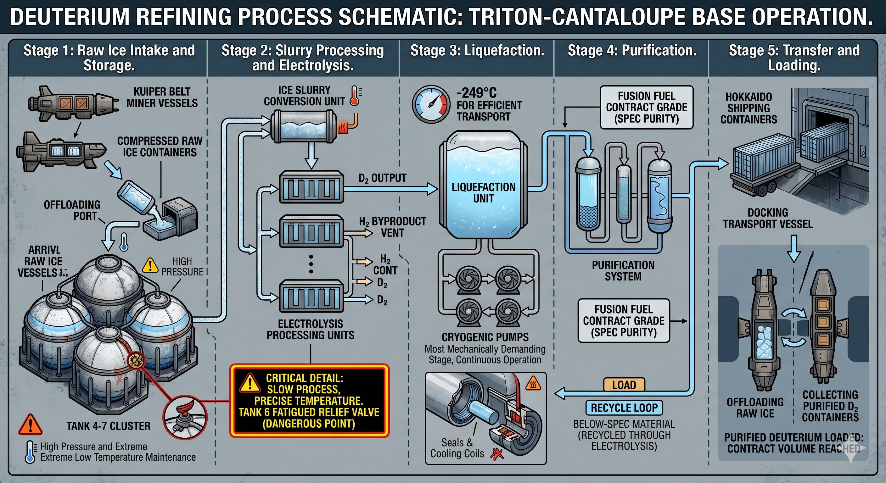

"Savindra, there's a small problem over at the refinery. Could you come in for 5 minutes and sort it out?"
That's exactly how my day off got wrecked.
I'd paid good money for a packet of "Sri Lanka Eggplant Moju" flavor extract - picked it out with some difficulty from a shipment that came in from Europa (good luck getting anyone in Sri Lanka to recognize this as the taste of eggplant moju) - put an old film up on the holo, and settled down on my bunker bed to watch. The fine folks at Hokkaido Deep Space Mining Corporation had absolutely no intention of letting me have even that much peace.
By then I'd been working at the Triton-Cantaloupe base for about eight years. Why I came to a job that pays a touch more than slave wages, I can't tell you myself. The urge to go out and see space, probably - that's the explanation I've settled on for now. But who goes out to see space expecting that on the side they'll be stuck doing a grunt job like this?
"Can't John take a look?" I sent back a reply to the supervisor's holo message. John's the guy covering my shift today.
"He did look at something. But it didn't work out. He said he's not sure without your input. Come on, you can probably fix this quickly. Could you please come and take a quick look."
I'd written a little app so I could check the state of the deuterium refinery machinery from the holo whenever I wanted. Figuring I'd look at the situation through that, tell John some way to fix it, and stay in without letting my day off get smashed to bits, I opened the app without replying to the supervisor. The pressure in the liquid deuterium in the third liquefaction unit had dropped. The deuterium we receive as ice has to be separated out from other components like hydrogen, packed into high-pressure chambers, and chilled — only then can it be sent off for use. If the pressure drops anywhere in here, the amount of deuterium we can ship out per day goes down.
I remembered a seal in that tank had been due for replacement today. If things had gone right, it should've been done today. Somebody's slacked off, I thought. Today was my day off; I had every right to send a checklist to the people on shift and stay holed up in my bunker. But some devil sitting in the corner of my mind kept slowly, naggingly muttering: go and look, if this goes south it's all over. What's a man to do.
I put on the safety suit you wear for work and went over to the refinery. When the pressure dropped, somebody had cranked up the deuterium pump feeding liquefaction tank number 3 - but the pressure hadn't recovered, I could see that.
There had to be something wrong with the seal they'd swapped in. What's supposed to go in here is the LDS-7743-DHX seal type, which can withstand the -265°C at which deuterium liquefies. Somebody had instead put in the LDS-7743-NLX seal - that one only works down to about -196°C. Which means the seal had gotten colder than it could handle and contracted too much. This seal sits where the shaft that goes into the tank to stir the deuterium connects to the tank itself. When I looked at the spot where the seal sits, sure enough, deuterium had leaked and frozen water into ice all around it. Standard procedure says you have to check for a leak before raising the pressure.
Triton base doesn't have a proper training program. What they give you is some joke of a basic course, "Working in Off-World Industries." You have to learn how things work at this base by asking the people you work with. Let's build a way to actually train new people, I message the bosses about once a month. Whether they even register something like that, I don't know. It's like - they put untrained people to work, and the day this base blows up like an atom bomb, they'll understand. Except by then we'll all be dead.
I opened the second pipe on tank 3 as well, trying to pump more deuterium over to the next tank. That dropped the pressure in tank 3 and let me cut down the deuterium leaking from the seal. If only it had ended there. As the pressure inside tank number 3 dropped, the pressure in liquefaction tank number 2 rose. As that tank's pressure climbed, a problem I'd found there earlier came back to me and I broke into a cold sweat. The cooling coil in tank number 2 was badly cracked, and the temperature in that tank had already been running a little high for about six months now - not by a lot, two or three degrees. This coil is what pulls the heat off the pressurized deuterium and dumps it outside. When I opened my holo app, I found the message I'd sent to base six months ago saying the coil was failing. I also found the reply some Hokkaido finance manager had left: no budget to repair it. These management types sit out at Europa, near Jupiter. To people millions of kilometers away, Triton base is just a pile of numbers. They're not prepared to give a damn about a single thing we ask for.
As I watched, the temperature inside the deuterium tank with the failing coil started to climb. -249°C... -246°C... -243°C. Watching the tank temperature rise on my monitoring app, I felt a hint of a serious problem. Going above -246 means liquid deuterium is turning into deuterium gas. When deuterium gas fills tank number 2, the pressure rises, and the pressure across the whole system goes up. Now, there's an automatic valve that opens to keep the pressure down when something like this happens. And there's a fan that, even if gas leaks, can pull the gas right out and dump it outside. But you know how it is; every time, it's the man who's already fallen out of the tree the bull decides to gore. When I went over and scanned the fan, that wasn't working either. Someone from electrical had recently disconnected the power feeding the fan for some job and hadn't reconnected it properly. This was a big issue that needed fixing. However it looked like this job had been deferred every week during maintenance.
Let me lay out the biggest problem I had at this point. The deuterium pressure in the tanks rises, deuterium gas leaks from the relief valve. The fan that could pull the gas out and dump it isn't working. Deuterium gas is collecting behind the tanks. And you know what we mostly use deuterium for? Rocket engines. Which means deuterium is a highly flammable, explosive gas. If there's more than 4% deuterium anywhere, even a small spark can make it blow up like a bomb. By the time I noticed, gas had been leaking from the valve for about forty minutes. By my calculations, if the leaked deuterium gas ignited... Triton-Cantaloupe base would be just one more crater on Neptune's largest moon.
When something this big happens, you have to get the base's people out and to safety. Normally there are plenty of mining ships at the base that brought the deuterium in - you just load people onto those and send them off. But recently Hirano-35, the largest-class vessel mining in the Kuiper belt, had hauled in a huge load of deuterium and filled our capacity, so we'd notified them to stop sending mining ships to our base for a while. We did have small craft that could carry people to the platforms in orbit around Triton, but getting every single person here out on those would take a long time. Looking at it that way, I understood there was no evacuating the base before it blew. Either I had to do something to fix this, come up with some plan to get as many people off the base as possible, or take the hidden third option: run around the base screaming like a lunatic.
"Get the people in this base out immediately. There's a deuterium leak; a major explosion is possible." I sent my supervisor a radio message. His reply was: "You can't just do that all at once, Savindra. You know how Hokkaido Corporation reacts if our production drops, don't you?"
"If everyone dies, refinery output is zero. How will they react then?"
His reply was just "Ok."
I heard the base PA system come on. "To all staff at Triton-Cantaloupe base. A minor malfunction has created a hazardous situation. Staff are advised to enter the safety bunkers. Please remain calm and proceed slowly to your nearest bunker."
If the leaked deuterium gas ignited there wouldn’t be any bunkers left on this base - you wouldn't be able to tell there'd ever been a base. I guess it would’ve been easy to do the same as these guys and shut my eyes to the danger and wait until it goes away.
I had to find a way to get the deuterium gas that had been accumulating because of the non-functional fan out of the base. I remembered a procedure I'd written a while back to use in exactly a situation like this. I opened it on the holo. I looked at the history it shows in the corner of the document:
Document created - Savindra - 2105.03.04
Document open log -
Savindra - 2105.10.15
If I wrote it, then I'm the one who has to do it, aren't I?
I radioed John, the on-shift guy today.
"Hey man, the situation's a bit more serious than management is making out. I’m going to have to security-bypass the airlocks in the emergency vent."
"Anything I can do to help?"
"If I don't make it out of this, send my stuff back to Sri Lanka if you can."
First I shut down all the refinery machinery and the tank pumps, then closed off the valve that had been leaking. The procedure I was going to execute would take me into Triton’s atmosphere at the end. So I had to put on a "Triton suit" - the kind rigged with an oxygen tank, suitable for work outside. According to the procedure I'd written, I had to open an outward-facing service vent through an emergency override. This opens three airlocks one after another to send the gas out. The first door of the service vent sat right next to tank number 2, where the deuterium was leaking. The moment I opened it, deuterium gas would fill the narrow corridor I had to go down next. I had to walk into a fuel-loaded atom bomb to defuse it.
Opening the three airlocks meant doing all sorts of system bypasses. For the first door, putting in my key card and entering my password got me past the security process and the door open. I had to stand and watch as the fans in the service corridor pulled in the entire load of deuterium gas that had been in the refinery. The second door had a detection system that reads the corridor's air pressure and locks the door. Luckily, the procedure I'd written had a way to write a bit of code on the holo, hack it, and open the door. As I connected the holo to the door's access panel, a vision flashed before me - a tiny electrical leak, a small spark, the base going up. My hand trembled a little as I brought the cable over to the door panel.
Somehow I got the second airlock open too, went forward down the corridor, closed the second airlock again (otherwise the base's oxygen goes out too), and made it to the third door. The third door opens directly to Triton's thin atmosphere. On a gas meter mounted on the corridor wall, I watched the deuterium percentage climb in decimals. 4.2%, 4.28%, 5.1% - gas was collecting inside the corridor. Past the percentage where it could blow. If something went wrong as I opened the last airlock, I wouldn't need a spaceship to get back to Sri Lanka; the exploding deuterium would catapult me straight home like a rocket. We would never allow a computer, which can fail, to control an airlock that opens out into the atmosphere. So the lock on this door was an old-fashioned round cranker. This was the easiest lock to open but because the air pressure inside the base was higher than the pressure outside, the moment I opened the airlock it threatened to fling me onto the surface of Triton. Hanging on somehow in the middle of the windstorm, all the gas that had been on this side of the second airlock was released into Triton's atmosphere. The last bit of gas escaping pushed on me like a giant blowing through a straw and I was thrown clear out of the airlock. Triton's gravity is about 8% of Earth's, so I had no fear of hitting the ground hard. However my helmet hit a ridge on Triton’s ground which is pitted with holes like a cantaloupe (that's how our base got its name) and rattled my brain a bit. Considering, getting away with just a slightly shaken brain wasn't bad at all.
I don’t quite remember how I got back inside the base. I radioed the supervisor and told him I'd pulled the job off the moment I got inside. He didn’t ask for any details; just replied “Good work.” The PA system broadcast another message in a while: "To the staff of Triton-Cantaloupe base. The hazardous situation has now been averted, so you may resume work. We extend our thanks to the technical team that labored to bring this situation under control."
I was dead tired and my head hurt by the time I got back to my bunker. I went to sleep without eating the now-cold eggplant-moju-flavored meal.
When I woke the next day, remembering what had happened the day before, what I felt was something like relief, and a little anger. Checking the holo, I'd gotten a message.
"Savindra,
We have learned of the work you performed at Triton-Cantaloupe base on 2105.10.15. Reviewing all the base log records, I saw that you very skillfully averted a major catastrophe. In light of this, I am recommending you for a promotion at the base. My congratulations to you. Have a good day.
Sincerely,
Director of Infrastructure Engineering"
So there is someone at Hokkaido who can understand what actually happened at the base. But they seem to have seen nothing about the systemic problems here. What's to be done - just another day at Triton-Cantaloupe.
But... maybe if I get this promotion, I could do those things myself? Maybe I could build a new training program, the ability to get the supplies we need on time without budget cuts - things like that?
I thought to myself: maybe even a little guy working out at Triton-Cantaloupe, this far from home than you could imagine, gets a chance now and then to do something big at Hokkaido Deep Space Mining Corporation.
"Savindra, John's sick today - could you take his shift too?"
"Yup. I can."